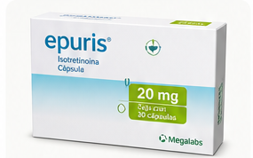
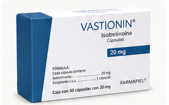
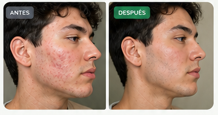
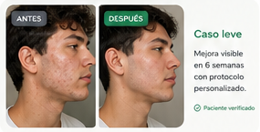
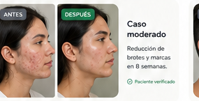
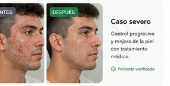
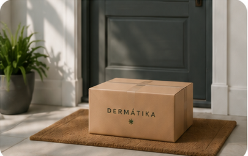

Dermatología online premium
Tratamiento médico para el acné que realmente funciona
Evaluación médica online + tratamiento personalizado + seguimiento real.
Evaluación por médicos
Protocolos dermatológicos reales
Resultados visibles en semanas
100% confidencial
Iniciar evaluación médica
Evaluación médica digital enfocada en soluciones reales.
+3,000
pacientes han iniciado su evaluación dermatológica
Tratamientos personalizados
Marcas dermatológicas premium
Evaluación médica digital
Protocolos para acné real
Seguimiento profesional
Envío discreto a domicilio
Información segura y confidencial
Dermatología moderna
Tratamientos personalizados
Marcas dermatológicas premium
Evaluación médica digital
Protocolos para acné real
Seguimiento profesional
Envío discreto a domicilio
Información segura y confidencial
Dermatología moderna
Tratamiento médico, no farmacia
Medicamentos dentro de protocolos supervisados
DERMÁTIKA trabaja con marcas dermatológicas premium dentro de protocolos personalizados y seguimiento profesional.

Marca premium
Uso dermatológico
Bajo supervisión médica
Epuris
Tratamiento dermatológico utilizado dentro de protocolos médicos personalizados.
Marca considerada dentro de protocolos con seguimiento profesional.
Evaluación clínica
Uso dermatológico
Bajo supervisión médica
Vastionin
Opción dermatológica considerada según evaluación, antecedentes y tipo de acné.
Selección orientada por necesidades reales de cada paciente. Protocolo personalizado
Protocolo personalizado
Uso dermatológico
Bajo supervisión médica
Neotrex
Marca utilizada dentro de protocolos dermatológicos sujetos a revisión médica.
Tratamiento dermatológico guiado profesionalmente.
★★★★★
Resultados reales en pacientes con acné
“Probé muchos productos sin resultados. Con un tratamiento personalizado, mi piel empezó a mejorar en semanas.”
Andrés M. Paciente verificado
Mini diagnóstico interactivo
¿Cómo describirías tu acné?
Elige una opción para iniciar una evaluación médica digital enfocada en soluciones reales.
Casos por severidad
Resultados reales
El seguimiento y tratamiento se adaptan a las necesidades de cada paciente.

Leve
Mejora visible en brotes ocasionales con protocolo personalizado.

Moderado
Reducción progresiva de inflamación, marcas y brotes frecuentes.

Severo
Control médico para acné persistente con seguimiento estructurado.
Proceso claro
Tu piel puede cambiar. Estamos contigo en cada paso.
Evaluación médica, protocolo personalizado y acompañamiento real para que avances con seguridad.
Comenzar mi evaluaciónEvaluación médica
Completa tu diagnóstico online y comparte la información clínica necesaria.
Tratamiento personalizado
El médico define tu protocolo, dosis, indicaciones y criterios de seguimiento.

Recibe tu tratamiento
Envío directo a casa, discreto y con acompañamiento durante tu evolución.

Soporte continuo
Soporte dermatológico continuo
Acceso a seguimiento, dudas y ajustes durante tu tratamiento. No estás comprando una rutina: estás iniciando un proceso médico acompañado.
Quiénes somos
DERMÁTIKA es dermatología digital para tratar el acné con dirección médica.
Somos una plataforma dermatológica digital especializada en acné. Combinamos evaluación médica, protocolos personalizados y seguimiento continuo para acompañar cada caso con claridad, privacidad y criterio profesional.
No vendemos productos al azar: diseñamos un proceso guiado para que cada paciente avance con información, confianza y un plan dermatológico adaptado a sus necesidades.
Transformar la piel y la confianza.
Acercar tratamientos dermatológicos efectivos, accesibles y personalizados mediante atención médica real, seguimiento continuo y procesos claros.
Ser la referencia digital en acné.
Construir una plataforma reconocida por confianza médica, resultados medibles y un modelo simple que permita tratar la piel de forma profesional.
Valores
Nos enfocamos en cambios reales en la piel, con seguimiento y claridad.
Cada protocolo es revisado y supervisado por profesionales médicos.
Indicamos lo necesario para cada caso, sin sobreprometer ni saturar.
Tratamiento dermatológico profesional desde una experiencia digital simple.
Seguimiento durante el proceso, con orientación clara en cada etapa.
Información protegida mediante procesos seguros y confidenciales.
Pacientes verificados
La confianza empieza con claridad
N
Natalia Ríos
Paciente DERMÁTIKA
★★★★★
“La evaluación fue clara y el seguimiento me hizo sentir segura desde el primer día.”
C
Carlos Méndez
Paciente DERMÁTIKA
★★★★★
“No sentí que me vendieran algo. Primero revisaron mi caso y después definieron el plan.”
A
Andrea López
Paciente DERMÁTIKA
★★★★★
“El envío fue discreto y pude resolver mis dudas durante el tratamiento.”
Preguntas frecuentes
Todo empieza con una evaluación
¿Cuánto cuesta el tratamiento?
El costo depende del protocolo indicado, duración, dosis y seguimiento requerido. Primero se realiza una evaluación para confirmar si eres candidato.
¿Funciona para mí?
Depende de tu tipo de acné, historial médico, contraindicaciones y objetivos. La evaluación inicial ayuda a orientar tu caso antes de avanzar.
¿Qué incluye?
Evaluación online, revisión médica, protocolo personalizado, instrucciones de uso y seguimiento durante el tratamiento.
¿Recibo medicamentos?
Tu evaluación fue diseñada para identificar candidatos adecuados al tratamiento. Cuando tu protocolo queda definido, el envío se coordina de forma discreta a tu domicilio.
Tu piel puede cambiar. El primer paso es entenderla.
Inicia una evaluación médica online segura, confidencial y enfocada en resultados reales.